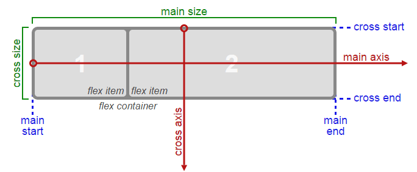

Cada vez que se define un flex-container este adquiere automáticamente dos ejes:
De forma predeterminada los elementos (flex-items) se alinean respecto al main axis.
La direccion de los ejes puede cambiarse con la propiedad flex-direction (aplicada al container).
.container-demo {
display: flex;
flex-direction: row-reverse
}
Los valores para flex-direction son:
Se usa la propiedad justify-content
Para esto se usa la propiedad (del container): align-items (cuando es una sola fila) y align-content (cuando son dos o más filas)
Cuando un elemento no tiene hijos y solo tiene texto dentro, el texto se convierte en un flex item si es que el elemento se convierte en un flex-container